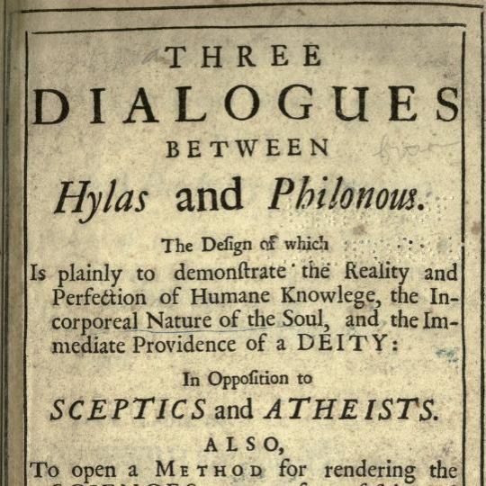

Berkeley’s Three Dialogues
Fri., Mar. 8
In this class, we discuss Berkeley’s Dialogues. Philonous is a sophisticated Berkeleyan idealist, and Hylas is a less sophisticated figure who
thinks the denial of material substance is tantamount to skepticism. But throughout the First Dialogue, Hylas is forced to admit that there is a good case for
treating more and more sensible qualities (pains, secondary qualities, primary qualities) as existing only within a mind. But then once sensible qualities
have been given an idealist treatment, all that is left for Hylas to insist upon is the mysterious Lockean material substance—something we have no idea of. Who then is the true skeptic?
Key Concepts: Immaterialism, Idealism, Skepticism
Readings:
First Dialogue required, Second and Third Dialogues optional
Powerpoint Slides:
N/A yet
Other Resources:
Early Modern Texts
Stanford Encyclopedia of Philosophy
Internet Encyclopedia of Philosophy